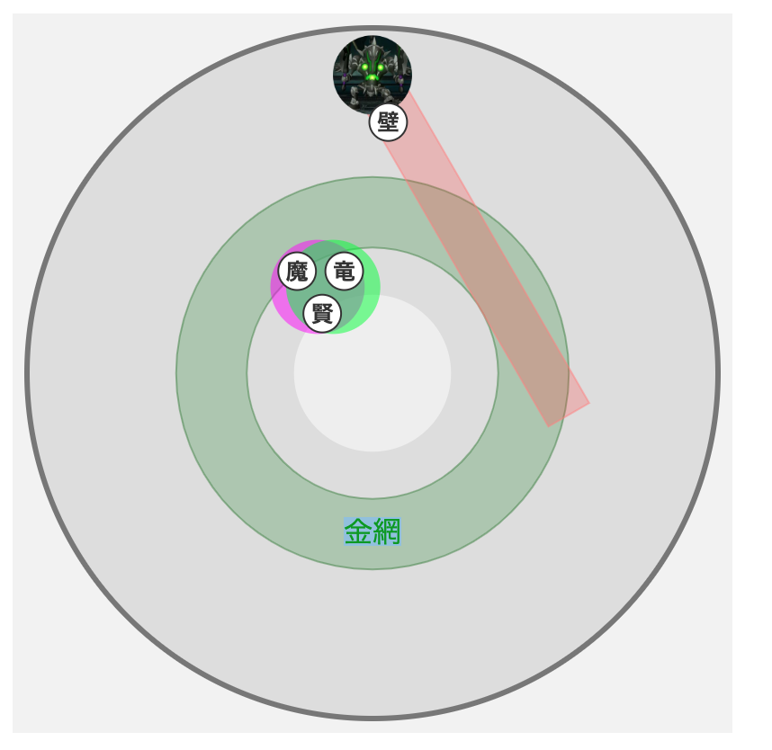

悲愴のウィリーデ
強さ2 行動表へジャンプ
- マシン系
- 強さ1:炎と土1.05倍.その他0.8倍
- 強さ2:炎と土1.05倍.その他0.8倍
- 物理攻撃:25%軽減.
- 構成
- 賢者 ヒーラー
- パラディン
- 魔法使い
- 竜術士
- 各職行動
- 賢者
- 両手杖,霊脈は賢者が9:10,竜術士が8分15,魔法使いは7:20.三番目におく.被り気味で置いていっていい.
- ツッコミのタゲであることも忘れずに.
- マヒャデドス前には最遠タゲをとって,マヒャデドスはマホステで受ける.
- 壁と軸を合わせる.
- ベホイムとベホマラーを使い分ける.パラにはベホイム.ジャッジメントにはベホマラー
- やまびこの陣の上だとベホマラー2回になる.避けれずに危ないので,ベホマラーは陣の外からドルモーアは陣の中から.
- パラ
- 開幕はAペチでボスの前に行くと押し切る時間を短縮できる.だけどパラタゲグランドインパクトとかに注意.だいぼうぎょもかまえておく.
- 攻撃を右にそらす.
- 歩きCTCに気を付ける.4秒歩いてから回転アタックとかある.(鬼畜...) AI1のときはCTCに気をつけよう.
- クライレーザーにはやいばのぼうぎょ
- 魔結界で呪文耐性を維持.
- ファランクス,アイギスないとクライレーザーが怖い.
- 不協和音は堅陣,ダメージはパラディンガードで防げる.
- 2024/10/26, 魔法火力がめちゃ高くなったのでティンクルとかスピリットゾーンとかもういらないかもしれない..
- 魔法使い
- 開幕の超暴走魔法陣は魔法使いが敷いてあげる.CTないから.
- 霊脈は賢者が9:10,竜術士が8分15,魔法使いは7:20.三番目におく.被り気味で置いていっていい.
- 魔結界は維持しよう.後衛にメラゾーマ飛んできたりする.
- 超魔力覚醒を忘れずに(初回20秒,CT90秒,効果40秒)
- ミラクルゾーンにも超魔力覚醒含まれてる.
- メドローアは攻撃呪文強化,呪文耐性低下をかの影響を受けない.ミラクルゾーンより前に打つ.(リミットがきそうなら待つ.)
- 氷には耐性があるので,メラゾーマ,メラガイアーしか使わない.
- 重要:パラが死んだ時には蘇生時マホカンタをかけてあげる.すぐ左右にユニットに焼かれて死ぬから.
- 竜術士
- ドラゴラムは微妙..大岩ふらしを使って解除するのはあり.だけどドガンテル2回,ドガンタロスとかの方が強そう..開幕必殺はあり.押し切るまで暇だから.
- 霊脈は賢者が9:10,竜術士が8分15,魔法使いは7:20.三番目におく.被り気味で置いていっていい.
- やまびこの陣を維持する.リミット前には置き直したりしよう.
- エレメントブーストはなくてもいいけど..ザオトーンボムと避けたりミサイル避けたり暇な時に.
- 魔法使いさんを気持ち良くするための職業.魔法使いさんを全力サポートする..
- 必要装備
- 体上は呪文耐性.宝珠込みで27%くらい魔結界も維持する.これで67%.メラガイアーとかは2800くらう.2800*0.33→924なので HPはこれくらい必要.
- それか炎耐性とか竜のうろことかで軽減しよう.
- マヒ,幻惑(パラ)
- パラディンのHPについて
- HP1188:被ダメ62減（ウロコ+フォースシールド）
- HP1218:被ダメ32減（幻界王+フォースシールド）
- HP1228:被ダメ22減（幻界王+天球の大盾）
- パラディンの装備
- フォースシールド＆呪耐58（盾or体上が理論値）→ハンマー＋ウロコでHP1188
- フォースシールド＆呪耐59（盾＆体上が両方理論値）→幻界王＋武器自由でHP1218 または ハンマー+ウロコでHP1188
- 天球の大盾＆呪耐59以上→幻界王＋武器自由でHP1228
- アロースコール→対象と周囲ランダムに約550 6回ダメージ
- グランドインパクト→対象と周囲に約450 2回ダメージ
- 絶刀両断→前方直線上に約2000ダメージ
- 大回転ミキサー→敵の周囲に約3500 2回ダメージ + ふっとび
- ユニット射出→HP90/75% 残りHP90%でミサイルユニットを召喚,残りHP75%でレーザーユニットも召喚
- ザオトーンボム→4つのボムを設置.爆発して9999ダメージ+ザオトーン
- クライレーザー→前方全員に約1100ダメージ+幻惑・マヒ.
- 分散する災禍→HP75%～ 対象と周囲に約1200 2回ダメージを分散
- リミットアポカリプス→地面に次々と緑色のダメージ床を出す.詠唱中にダメージを与えれば詠唱は止まりウィリーデがスタン.
- ファイナルレイ→前方全員に約4000ダメージ+良い効果を消す+最大HP低下.だから大防御しても1ダメでも食らうとだめ.
- ジャッジメントフレア→対象4人と周囲に約380 2回ダメージ
- 破滅のテンペスト→敵の周囲以外に9999 2回ダメージ
- 悲愴な不協和音→敵の周囲の全員の良い効果を消す+ふっとび+守備力0+攻撃・守備・行動間隔2段階低下.この攻撃が1人以上に当たった場合,ウィリーデに攻撃時HP回復+コマンド短縮を付与
- サークルブラスト→フィールド内の1カ所以外の全ての場所に9999 2回ダメージ
陣形
強さ1
行動
この図が全て. 黄赤の切り替わりにはローテが飛ぶことがある.リミットとかジャッジ飛んだり.急にリミット来たり.

強さ2
行動